Before: PR #39, c058ba66e9dd3a9b53781b09da88e6c19bf3074b. After: this stacked revision. Before captures use the static reduced-motion reference; revised captures enable motion. Windows Chrome browser emulation, normal compiled builds and identical read-only public GET fixtures. Production has not been promoted.
The approved take has a visible end/start pose change. The player fades to the approved still over 180ms, holds it for 140ms, then reveals a decoded, alpha-verified start frame. This is a deliberate still bridge, not a claim of seamless source footage. Source portrait, video and voice bytes are unchanged.
Recordings show arrival, one complete visual cycle/bridge, Hear introduction, the complete spoken take and return to muted looping. Three consecutive real cycles are separately verified by the browser regression. Audio below is the unchanged approved Opus source muxed at the measured browser speech origin; it is not a microphone/system-audio recording. The assistant did not audition the voice or certify physical-device lip sync.
Download recording · Playback timeline and network
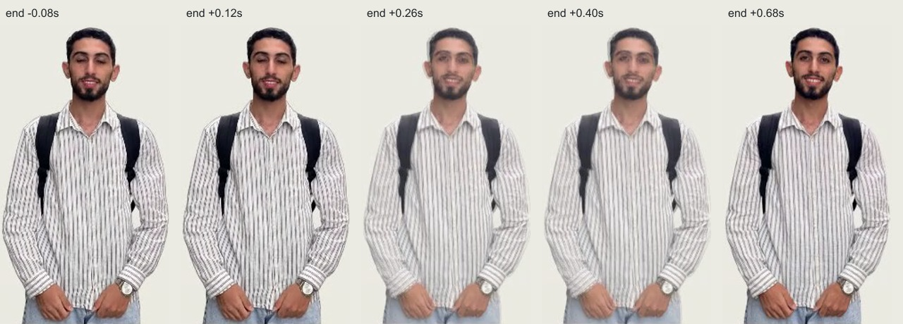
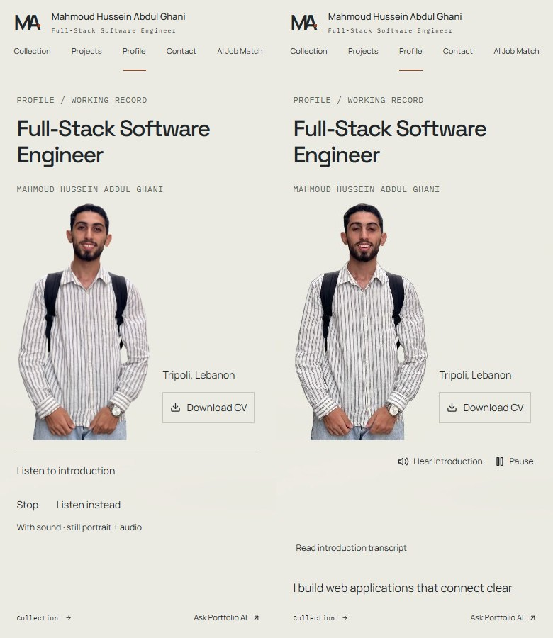
Download recording · Playback timeline and network
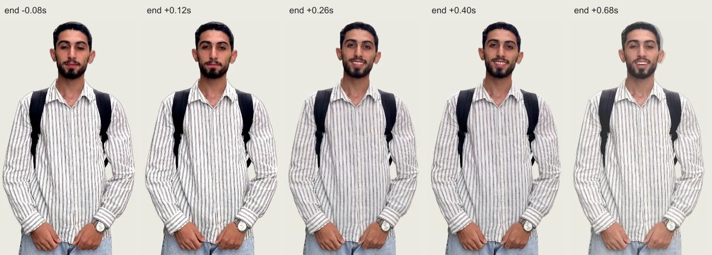
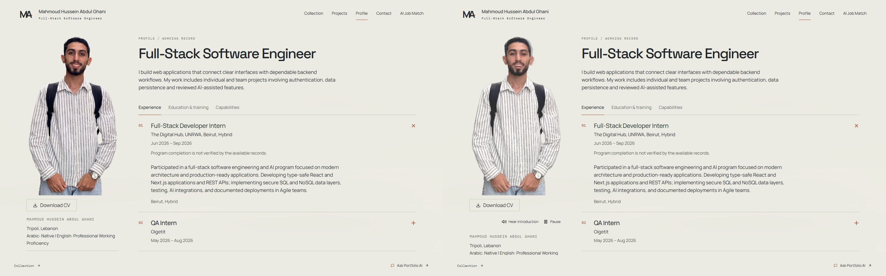
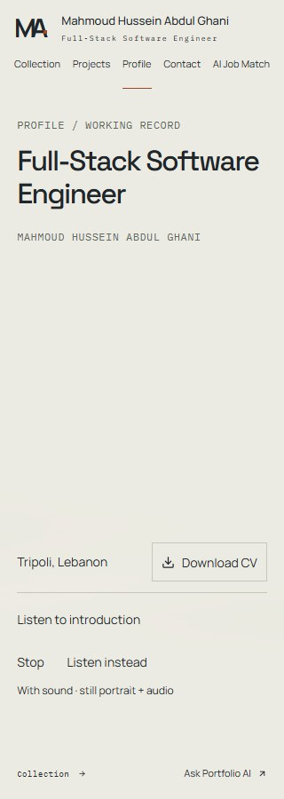
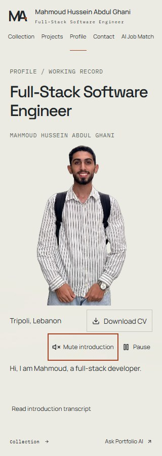
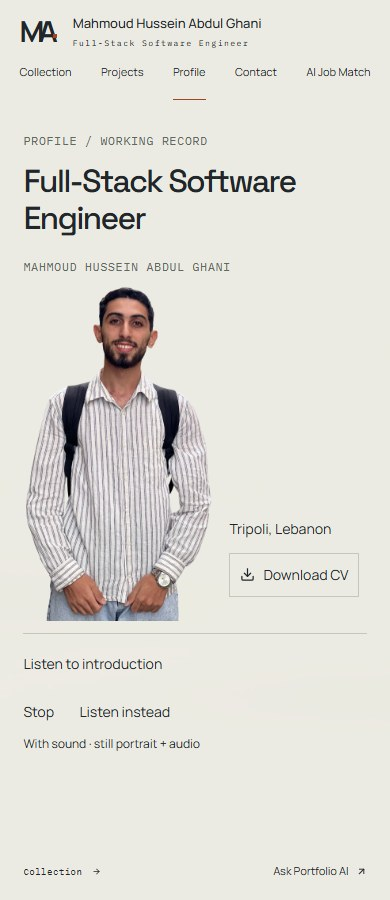
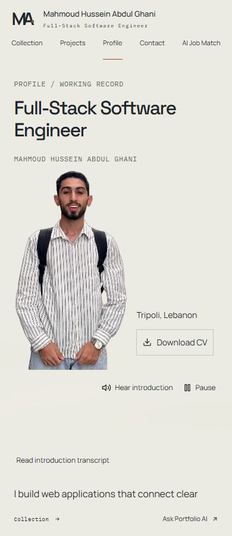
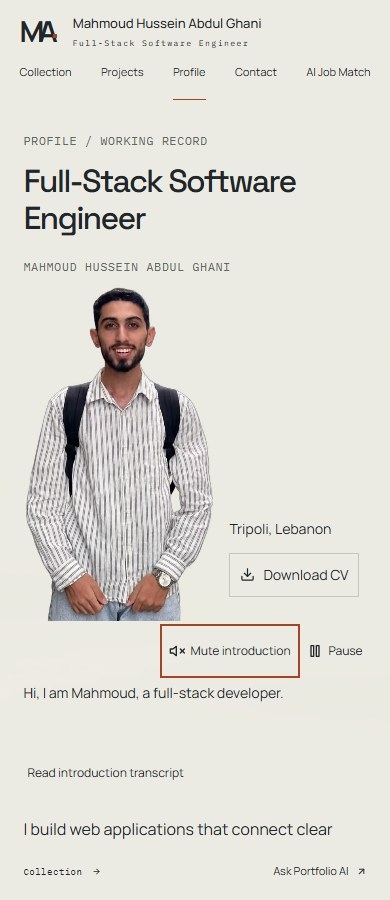
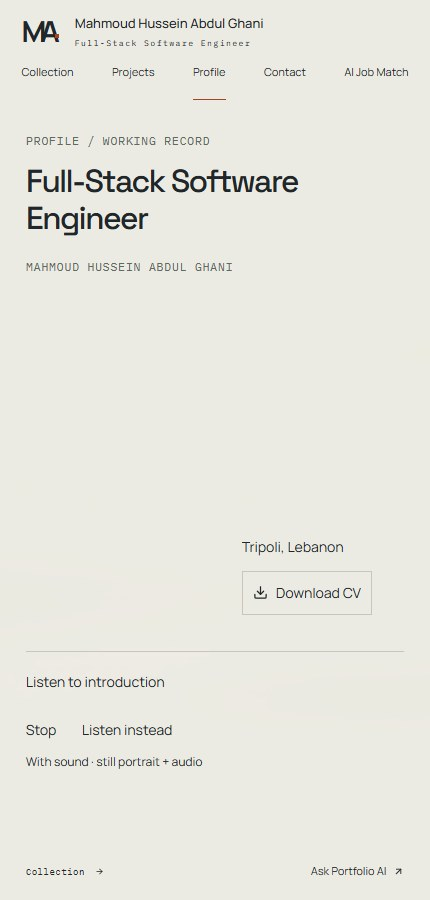
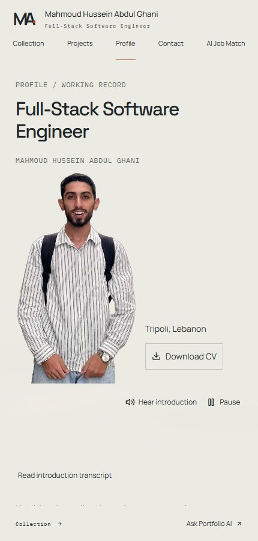
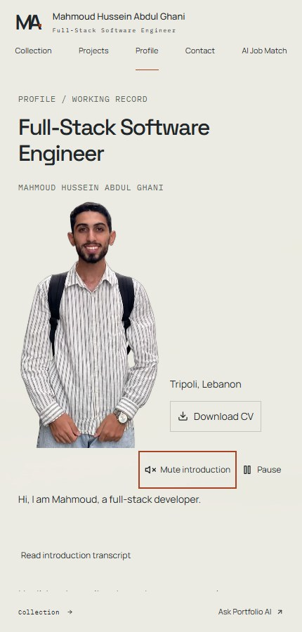
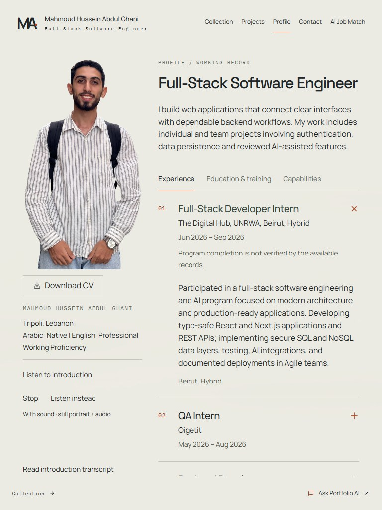
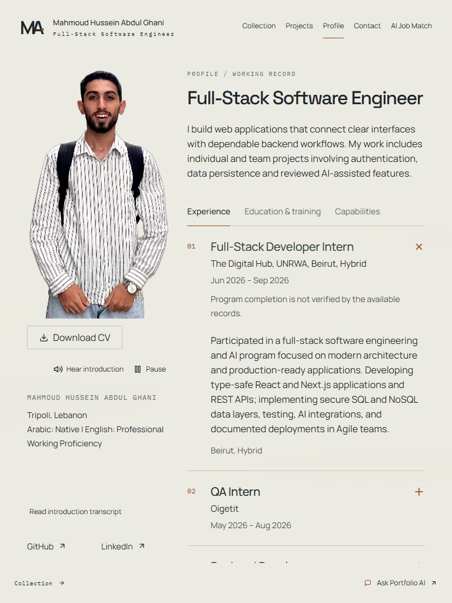
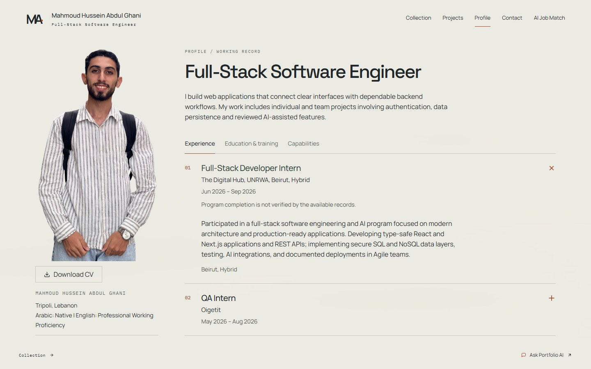
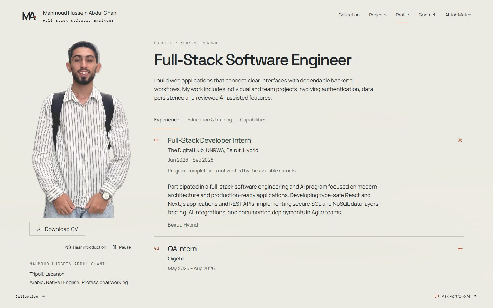
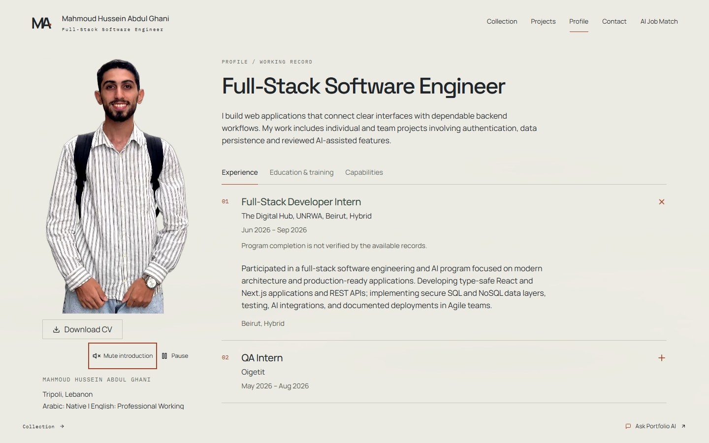
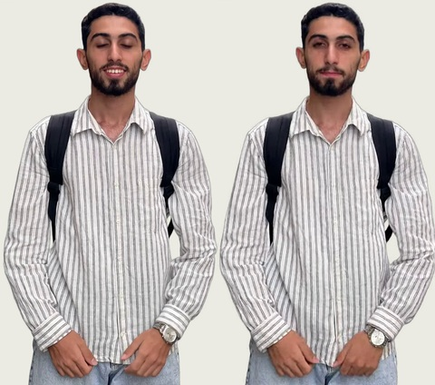
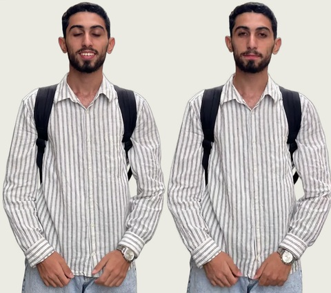
Geometry, CV hash and browser findings. Hidden/offscreen/reduced-motion/blocked/opaque/error races are covered separately by focused browser tests. Physical Android/iOS/Safari, hardware audio, screen readers and protected hosted content remain acceptance gaps.